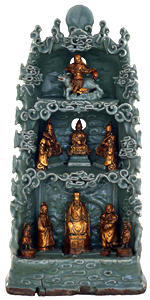

|
contact
us
> faqs
How
are Japanese woodblock prints made?
What
is Japonisme?
Does
the Department have any Chinese terracotta warriors?
Does the Department still curate manuscripts?
Why does figural representation occur in some
forms of Islamic Art and not in others?
When did the earliest known pottery appear
in South Asia?
What is the earliest known script from South
Asia?
Why do Indian sculptures so often have multiple
arms?
How
are Japanese woodblock prints made?
The responsibility for producing
a woodblock print was shared between four people, sometimes referred
to as the Ukiyo-e 'quartet' of publisher, artist/designer, block-cutter
and printer. The publisher directed the work, commissioning an
artist to make a neat design on thin paper. This was then given
to the block-cutter, who pasted the design face-down on a cherry-wood
block and carved the complete design in relief (that is, leaving
the outlines standing) and back to front from the original. Any
text was also carved in this way. It was critical for the block-cutter
to leave an L-shaped corner and short border line (together called
the kentô) as a guide for the printer to register the printing
accurately.
What
is Japonisme?
Europeans had developed an interest
in Far Eastern art, particularly ceramics, from the sixteenth
century, but Japanese art came to the fore from 1854 when the
United States and a number of European countries made treaties
which forced Japan to open to the outside world. Since Japan had
little heavy industry, it used the platform of several international
exhibitions to promote the skills of its artists and craftsmen
(at the time, the Japanese did not distinguish absolutely between
'arts' and 'crafts'). They quickly caught the imagination of the
West. A handful of significant individuals also promoted Japanese
art, such as Samuel Bing (1838-1905) who opened a Japanese objects
shop in Paris in the 1880s frequented, among others, by Vincent
Van Gogh (1853-90) and Toulouse Lautrec (1864-1901). Bing also
published a periodical, Le Japon Artistique.
Does
the Department have any Chinese terracotta warriors?
We do not curate any Chinese terracotta warriors, but have displayed
several in recent exhibitions, such as three figures in the exhibition
'Gilded Dragons', which were loaned to us by the Museum of the
Qin Shi Huang Terracotta Army, near Xian, in the People's Republic
of China.
Does
the Department still curate manuscripts?
Yes we do. When the British Library separated from The British
Museum in 1973 all of the unbound manuscripts were retained by
the Museum. Any oriental albums and single-page paintings are
still curated by the Department.
Why
does figural representation occur in some forms of Islamic Art
and not in others?
Figural representation does not occur in religious contexts such
as masks and the Qur'an, but it is allowed in a secular context
such as metalworking. Figural representation is more common in
some periods than others.
When
did the earliest known pottery appear in South Asia?
The earliest known pottery in South Asia has been recovered from
the site of Mehrgarh, Baluchistan, Pakistan in level IB. The pottery
is a plain handmade ware produced by moulding the clay around
a basket to create a bowl form. The pottery dates to the early
5th millennium BC.
What
is the earliest known script from South Asia?
The earliest developed script is likely to be that of the Indus
Valley Civilisation, in Pakistan and north-west India. The script
consists of a series of pictograms which remain undeciphered.
Although the script does not fully develop until c.2400 BC many
of the signs can be found on seals, pottery, and terracotta cakes
at the beginning of the third millennium BC.
Why
do Indian sculptures so often have multiple arms?
It is a method of depicting the power and attributes of a particular
deity.
|

| Daoist
shrine From Longquan kilns, Zhejiang province, south-eastern
China, Ming dynasty, Yongle period, dated AD 1406. |
|